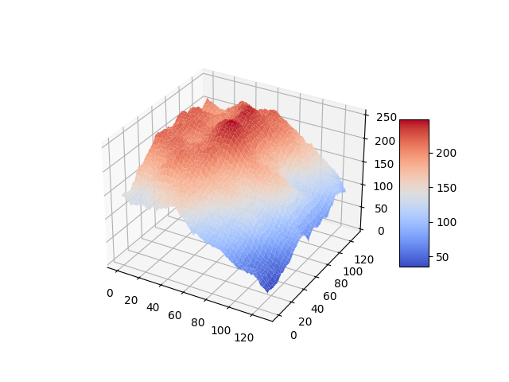

author: niplav, created: 2020-07-22, modified: 2024-07-16, language: english, status: maintenance, importance: 4, confidence: possible
In AI safety, significant time has been spent on the question of the intelligence of AI systems over time, especially during takeoff. An underappreciated argument in the debate has been the idea that the more intelligent an AI system becomes, the better it can search the space of possible optimization algorithms. This post proposes a computational model of this process by creating an n-dimensional search space and then running a very simple hill-climbing algorithm and brute-force search on that space. Possible further improvements to the model are suggested, and implications are discussed.
Paraphrasing Roache (2008) the state of play is such that nobody believes the result of a simulation, except the person who performed the simulation, and everybody believes the result of an experiment, except the person who ran the experiment.
— Ryan G. McClarren, “Uncertainty Quantification and Predictive Computational Science“ p. 9, 2018
(Although the quote apparently goes back to Einstein, see “The advancement of science, and its burdens” p. 13, only there with "theory" instead of "simulation").
And let me just make an aside. There’s a lot of meta-debate that goes on in the AI safety community which I don’t understand why: it’s not as if we haven’t got enough real work to do. So now we have meta-debates about whether you should focus on short-term or long-term, or whether we should try to reduce the conflict between the short-termers and the long-termers and it’s like, there doesn’t need to be a conflict.
— Stuart J. Russell, “The flaws that make today’s AI architecture unsafe and a new approach that could fix it” (Episode 80 of the 80,000 hours podcast), 2020
Many regard the trajectory of future AI development as crucial: when will AGI first be developed? Will the development be slow, moderate, or fast (in economic doublings, or in wallclock time)? Will one AGI system become a singleton, i.e come to dominate the whole world (individual vs. collective takeoff)? Will AGIs FOOM, i.e growing unexpectedly fast? And: will there be one or more discontinuity when AI systems recursively self-improve? This text attempts to shine light on the last question and highlight a (supposedly underappreciated) argument for one or more discontinuities in AI takeoff based on a computational model of an AI searching the space of possible optimization algorithms for stronger ones.
In the model, there are three possible ways of an AI improving its intelligence:
The most fleshed-out model of AI takeoff is Davidson 2023, which makes the median prediction of 20% automation to 100% automation in ~3 years (10th percentile: 0.8 years, 90th percentile: 12.5 years).
Along the axes of {fast, slow}×{continuous, discountinuous}, that feels quite fast to me, even if it isn't very discountinuous.
The other reasons make me move towards "but it might be a lot faster than that". One reason is that the Davidson model assumes that the human brain performs 10¹⁵ FLOP/s, and that the AI systems will be at most that efficient or slightly less efficient. So a lot of my disagreement is around: how much the ceiling of cognitive algorithms is above humans (my belief: very high80%), and the rest of the disagreement is how quickly can AI systems move towards that ceiling (my belief: not sure, but potentially within days40%).
One reason is that human brains don't seem like the optimal substrate for performing cognition: Warm & wet, very low information transmission speed (signals on neurons are limited to at most 200 m/s) Kokotajlo 2021, needing to self-construct and self-repair — and still brains are incredibly sample-efficient! And I suspect that, if anything, humans are at best at a subspace optimum of cognitive algorithms.
Then there's the power of error-corrected/discrete/serial computation: Digital computers can make very long inferences in discrete domains without problems, and when I introspect, I have the strong intuition that my system 2 tries to approximate this, especially when trying to enumerate options in a decision, recursively decompose a plan into its components (which gets much easier once you have a world model), perform abstraction (while caching which parts of the abstraction are tight and which are leaky)—but my system 2 only has 7±2 (or maybe actually just 4?) usable slots. And unless the limit is due to combinatorial explosion (which might be handleable by careful pruning, or prioritized search), AI systems could have larger (perhaps vastly larger?) working memories.
The standard rejoinder here is that evolution has optimized human brains really really hard, and our current technology is usually 2-6 orders of magnitude worse than what evolution has come up with. But if we believe that error-corrected computation is quite rare in biology, then this opens up a new niche to make progress in, similar to how there are no plants in space because they couldn't evolve rocket-like tech and transparent shells that were resistant enough in vacuum.
This points at an intuition I have: There is a bunch of α left in combining error-corrected/discrete/serial computation (which computers are good at) with error-resistant/continuous/parallel computation (à la neural networks or brains). And especially if I think about cognition through the lens of algorithms, it feels like there's a deep mine of algorithms: The space of possible algorithms is vast, and even in very simple problem domains we have found surprising innovations (such as going from the Karatsuba algorithm to the Schönhage-Strassen algorithm, or from the naive algorithm for the maximum subarray problem to Kadane's algorithm). My "optimism" here has been hindered somewhat by some evidence on how well old chess algorithms perform on new hardware, and the observation that the surprising algorithms we find are usually galactic (such as in the case of the decreasing shrinking rate of the best-case exponent in the computational complexity of matrix multiplication—where yet we still only use Strassen's algorithm).
Additionally, there's some domains of computation of which we have
made little use, because our minds are limited in a way that makes
it difficult to think about them. As the adage goes, programming is
divided into four levels of difficulty: if statements, while
loops, recursion and
parallelism;
but what about domains like self-modifying
code (where, except
maybe Gödel machines,
there is no respectable theory, and except Alexia
Massalin's
superoptimization there
isn't really any application)? Although, to be fair, neural architecture
search might
be getting there, sometime.
My view on better algorithms existing is not informed very much by specific observations about evolution.
As in the section about better algorithms existing, many of my intuitions here come from algorithm design and/or regular software engineering.
One argument against discountinuous takeoff is a response to the hypothesis of recursive self-improvement, in which AI systems start finding improvements to their own architectures more and more quickly (which I try to model here). The counterargument says that before there will be AI systems that are really good at self-improvement, there will be systems that are first crappy and then merely okay at self-improvement.
But usually, with algorithms, having a 99%-finished implementation of the algorithm doesn't give you 99% of the benefit, nor does it give you 50% or even 1% of the benefit. It simply doesn't work. And here intuitions collide: I find it plausible that, in this case, the The Gods of Straight Lines do not interfere, and instead something far stranger is afoot, but the machine learning intuition tells people that everything in neural networks is continuous, so why wouldn't there be a continous path to a TAI architecture?
One possible argument has the following premises:
If these premises are accepted, it is possible for some search spaces to construct an algorithm that attempts to find the best algorithm according to its optimization power:
This can be visualized quite nicely when one imagines the search space to be one-dimensional with arbitrary values (or perhaps its Gödel number) on both axes (which is of course not the case in reality):
At the first step in the optimization process, the algorithm is very weak and can only search a small portion of the space.

At the second step in the optimization process, the algorithm is slightly better than before and already defeating a local maximum.

The algorithm is now much stronger, and exploring a sizeable fraction of the search space.

It has now practically found the global maximum.
The height of the vertical bar indicates the optimization power of the current optimization process, while the width of the vertical bar indicates the portion of the space searched by the current algorithm. For simplicity, the current algorithm searches in its own vincinity, which also might be a good heuristic (since similar algorithms might have similar properties). The width of the horizontal bar increases as the current optimization algorithm becomes stronger and stronger, which leads to bigger subspaces being searched and in turn better algorithms being found.
This argument might fail in many different ways, e.g. if being more intelligent does not imply being more able to search the space of optimization algorithms quickly (e.g. by compression and searching the compressed data).
However, a conceptual argument is not sufficient here. It would be advantageous to test whether a similarly explosive effect occurs in higher-dimensional spaces with different characteristics.
A computational model can shed some light on whether the argument above would actually bring about discontinuities in the recursive development of artificial intelligence, and can also provide a more concrete ground for disagreement (for by creating an opportunity for people to modify the code and show that different search spaces, search algorithms and external factors generate different conclusions).
On a high level, in pseudocode, the model executes a code similar to this:
space=gen_space()
fill_space(space)
pos=random_pos()
factor=intelligence=1
for i=0, rounds
print(intelligence)
factor*=1.001
intelligence=max(1, space[pos])*factor
pos=climb(space, pos)
pos=search_subpart(space, pos, intelligence)
First, the space is generated and filled with values. Then, the AI repeatedly grows a little bit, does some hill-climbing, and brute-force searches the neighbouring space.
The search space the AI would be inquiring into here is the space of all possible algorithms. While I'm not very knowledgeable about the structure of the space of algorithms, it seems plausible to me that it would be isomorphic to the perfect binary tree with infinite depth (for any given turing machine with a binary tape).
However, since I do not know algorithms that would assign possible values to nodes in the tree, as well as fitting search algorithms, I decided instead to use a Euclidean space to stand in for the space of all algorithms. Specifically, the metric space was even further simplified as an n-dimensional array with equal side-lengths:
dim=5
size=33
space=np.zeros([size]*dim)
However, I might return to more accurate representations of the space of possible algorithms.
The most important decision in this model is how to fill the search space (that is, what values to give the points in the search space).
Since I am very confused about what what a useful approximation of the search space of intelligent algorithms could look like, I start by generalizing the Diamond-Square algorithm to n dimensions.
The Diamond-Square algorithm is a fractal algorithm originally developed for terrain generation.
The generated landscapes often resemble mountain-ranges, they show relatively few abrupt local maxima. An example for a generated landscape:

The size of the space is restricted to dimensions of height/width/length
etc. $2^{n}+1$.
space=create_space(dim, size, minval, maxval, extrfact)
create_space is described in detail in Generalizing the Diamond-Square Algorithm to n Dimensions.
After generating the search space, it is searched for a number of times, each time increasing the intelligence of the current search process by a given factor.
for i in range(0, rounds):
factor*=growth
intelligence=max(1, space[tuple(pos)])*factor
f.write(str(space[tuple(pos)]) + "," + str(intelligence) + "\n")
To avoid algorithms of zero or negative intelligence, the floor of intelligence is set to 1.
The space is searched in two different ways, starting from a random point:
pos=[random.randint(0, size-1) for i in range(0, dim)]
pos=climb(space, pos, size, dim)
pos=search_around(space, pos, size, dim, intelligence)
First, the algorithm executes a very simple hill-climbing procedure. Here, it examines the position next to it in every dimension (in the case of two: in front of the current position, behind of the current position, left to it and right to it), but not the corners, and chooses the direction with the highest value. It then returns the position with the highest value, if that value is greater than the one of the current position.
maxpos=np.array(pos)
for i in range(0, dim):
pos[i]+=1
if 0<=pos[i]<size:
if space[tuple(pos)]>space[tuple(maxpos)]:
maxpos=np.array(pos)
pos[i]-=2
if 0<=pos[i]<size:
if space[tuple(pos)]>space[tuple(maxpos)]:
maxpos=np.array(pos)
pos[i]+=1
return maxpos
After hill-climbing, the model searches the neighbouring region of
the search space for better algorithms. The neighbouring region,
in this case, is a hypercube of dimension $n$ and the size
$1+2*\sqrt[n]{i^2}$, with the current position being the center
of that cube ($i$ is the current intelligence).
The choice of making the size of the hypercube cubic in the intelligence is pretty much arbitrary. I will test with different approaches, e.g. making it linear.
step=round(intelligence**(2/dim))
subpos=[slice(0,0)]*dim
for i in range(0, dim):
subpos[i]=slice(max(0,pos[i]-step), min(size-1, pos[i]+step))
subsection=space[tuple(subpos)]
This subsection of the space is then brute-force searched for a maximum, akin to the agent being able to reason about it and find near local maxima.
mp=np.where(subsection == np.amax(subsection))
pos=np.array([list(mp[i])[0]+subpos[i].start for i in range(0, dim)])
return pos
The position of the maximum found is then returned (often the current position). A new maximum having been found is akin to the agent discovering a more intelligent agent, and modifying itself to become that agent.
This approach is not as efficient as it could be: If the agent is caught at a local maximum, this approach leads to it searching parts of the search space multiple times.
Under this model, I assume an exponential growth as a backdrop. This exponential growth could be Moore's Law or Gross World Product growth, or another uninterrupted exponential growth mode.
This factor is currently set to 1.001 per timestep, or 0.1% growth. If the backdrop is Moore's Law, with a doubling time of 18 months (or 540 days), then a timestep would be
If one assumes GWP growth as a backdrop instead, one gets a doubling every 20 years (…yet. growth mindset) (see Roodman 2020), which works out to
per timestep.
Both assumptions seem not unreasonable to me (although I'm not an expert on such things): A day seems enough time for an AI to design and deploy an improvement to its own source code, although I acknowledge this might change with different AI designs (especially more clean and algorithmic designs might improve faster, while fuzzy & big neural nets might take much longer).
I ran the model several times, varying the size and dimensionality of
the search space. The spaces used were $\mathbb{F}_{8193}^{1}$,
$\mathbb{F}_{16385}^{1}$, $\mathbb{F}_{32769}^{1}$,
$\mathbb{F}_{65537}^{1}$, $\mathbb{F}_{1048577}^{1}$,
$\mathbb{F}_{16777217}^{1}$, $\mathbb{F}_{4097}^{2}$,
$\mathbb{F}_{65}^{3}$, $\mathbb{F}_{129}^{3}$,
$\mathbb{F}_{257}^{3}$, $\mathbb{F}_{65}^{4}$,
$\mathbb{F}_{33}^{5}$, $\mathbb{F}_{17}^{6}$ and
$\mathbb{F}_{9}^{8}$ ($\mathbb{F}_{a}^{b}$ being the vector
space of dimensionality
$b$ for the finite field
with $a$ elements). The biggest search space contained 43m elements.
Each iteration ran through 2048 timesteps, with a growth of 1.001.
datagen(1, 8193, 0, 256, 0.5, 2048, 1.001)
datagen(1, 16385, 0, 256, 0.5, 2048, 1.001)
datagen(1, 32769, 0, 256, 0.5, 2048, 1.001)
datagen(1, 65537, 0, 256, 0.5, 2048, 1.001)
datagen(1, 1048577, 0, 256, 0.5, 2048, 1.001)
datagen(1, 16777217, 0, 256, 0.5, 2048, 1.001)
datagen(2, 4097, 0, 256, 0.5, 2048, 1.001) # 16785409
datagen(3, 65, 0, 256, 0.5, 2048, 1.001) # 274625
datagen(3, 129, 0, 256, 0.5, 2048, 1.001) # 2146689
datagen(3, 257, 0, 256, 0.5, 2048, 1.001) # 16581375
datagen(4, 65, 0, 256, 0.5, 2048, 1.001) # 17850625
datagen(5, 33, 0, 256, 0.5, 2048, 1.001) # 39135393
datagen(6, 17, 0, 256, 0.5, 2048, 1.001) # 24137569
datagen(8, 9, 0, 256, 0.5, 2048, 1.001) # 43046721
I ran the model only once with each set of parameters, since I discovered that some parts of the model are very slow and take quite some time to execute on my puny hardware (I left the model running through the night).
I would like to run the model with a bigger search space, and more often than once, but unless I optimize the code to be faster, I expect the easiest option would be for me to get access to a computer that is more capable than my current laptop. If you have access to such a computer and want to run the code with other parameters on it, contact me or modify the code yourself (relevant file 1, relevant file 2) and send me the results.
A gzipped tarfile of the run data can be found here.
The model generated 14 space, and ran 1 takeoff scenario for each. 9 of the scenarios showed discontinuities after the first timestep (4 runs showed one discontinuity, 4 showed two discontinuities, and 1 run showed three discointuities). Late discontinuities, large discontinuities, and a higher number of discontinuities seemed more likely in bigger search spaces, and also with higher-dimensional search spaces.
Here are some graphs of the development of the search process. The blue line indicates the intelligence of the current algorithm at fixed resources, while the black line shows the intelligence of the current algorithm with the current resources.
A run in $\mathbb{F}_{16777217}^{1}$, with one discontinuity

A run in $\mathbb{F}_{4097}^{2}$, with one early discontinuity
A run in $\mathbb{F}_{65}^{4}$, with two discontinuities
This run illustrates why even jumps in intelligence can be a little surprising: the second jump in intelligence both makes the system around 16 times more intelligent (both controlled for resources and real-world). Using the resources the system has acquired before the jump, its growth in real-world intelligence is much faster than beforehand. If humans were controlling the system before the jump, it has now become much harder (or even impossible).
A run in $\mathbb{F}_{9}^{8}$, with two early discontinuities
This run contains two relatively early jumps, both of medium size. Being the most high-dimensional model, it undermines the hypothesis that late & big jumps are more common in more high-dimensional settings.
In some scenarios, one can observe that the model makes a very early jump to a relatively high level of capabilities. That probably happens due to hill-climbing to the local maximum.
An example for this is the run in $\mathbb{F}_{65}^{3}$:
11.465043286618974,11.476508329905592
79.33333333333333,79.49207933333331
173.441875,173.9627211240668
246.0,246.98547698424588
246.0,247.23246246123009
246.0,247.4796949236913
246.0,247.72717461861495
246.0,247.97490179323353
246.0,248.22287669502674
246.0,248.47109957172174
As suggested in the title, this model is very much exploratory, and is in many regards highly inadequate for modeling real-world AI takeoff scenarios.
The biggest problem with this analysis is that the space of possible algorithms (or minds) is nothing like the finite discrete euclidean space I have used here. I believe that the space of all algorithms is like an infinite binary tree, with each edge representing one program (the left child of an edge being the current program appended with 0, the right child being the current program appended with 1, and the root being the empty program).
The reason why I didn't use this search space was that I had no idea how to distribute the values for intelligence in the tree, as well as being unsure how to implement both the hill climbing as well as the brute-force search in that space (except only tentative ideas).
A separate concern I have is about using the diamond square algorithm to assign values for intelligence to points in the search space.
Diamond square was devised for producing convincing landscapes, and therefore has following problems:
I will be experimenting to salvage both of these points. 1. could be improved by changing the random number to assign to the current point in the space not using a uniform distribution, but instead perhaps a lognormal one. 2. Could be improved decreasing the numbers assigned and then replacing negative values with 0 (or leaving them, if it turns out that including algorithms of inverse intelligence makes sense).
The brute-force search in the space around the algorithm is also far from perfect. Apart from Vingean considerations, it seems that an AI would search the space much more systematically, potentially ruling out large portions of the space by proving that they can't contain more intelligent algorithms.
Furthermore, it would probably not search the space around the current algorithm repeatedly: This leads to many repeated searches, which could be avoided by just saving the positions of already observed points in the search space.
Also, searching the space around the current algorithm makes hill-climbing obsolete, unless the algorithm is so weak that the brute-force search has a radius of less than 1: all hill-climbing steps are already included in the portion of the search space searched in with brute-force.
The dataset I base my conclusions on is relatively small, only 14 runs, with a different space and parameters each. This is mostly due to the fact that I am doing this on my laptop, and didn't want the experiment running for several days (while it is running, I can't use my browser, because the model and my browser use more RAM than I have available, so the model is terminated by the OS).
Generating the search-space is much more expensive than doing several runs in the same search space, so I will focus on implementing these first.
The search spaces used in the model are relatively small, with the biggest containing ~43m points, and the rest being around 25m points big.
This makes inferences about how AI systems will optimize in much bigger (perhaps even infinite) search spaces harder.
This text provides a toy-model for AI takeoff scenarios using high-dimensional spaces filled using a n-dimensional variant of the diamond square algorithm.
Running the model with limited computing power, I observe that discontinuities indeed occur, and I hypothesize that in larger search spaces discontinuities occur later, and are larger.
However, due to multiple limitations, these conclusions are very haphazard.
If people arguing in favour of discontinuous takeoffs agree that this model is demonstrating one of their arguments, the main advantage of this model could be that it now offers a more concrete case at which skeptics can point to concrete implementation details or assumptions of the models that they disagree with, as well as modify it and demonstrate under which conditions no discontinuities occur.

A run in $\mathbb{F}_{8193}^{1}$, with no discontinuities

A run in $\mathbb{F}_{16385}^{1}$, with no discontinuities
A run in $\mathbb{F}_{32769}^{1}$, with no discontinuities
A run in $\mathbb{F}_{65537}^{1}$, with no discontinuities

A run in $\mathbb{F}_{1048577}^{1}$, with two discontinuities
A run in $\mathbb{F}_{16777217}^{1}$, with one discontinuity
A run in $\mathbb{F}_{4097}^{2}$, with one early discontinuity

A run in $\mathbb{F}_{65}^{3}$, with no discontinuities
A run in $\mathbb{F}_{129}^{3}$, with one discontinuity

A run in $\mathbb{F}_{257}^{3}$, with two discontinuities
A run in $\mathbb{F}_{65}^{4}$, with two discontinuities
A run in $\mathbb{F}_{33}^{5}$, with three discontinuities

A run in $\mathbb{F}_{17}^{6}$, with one discontinuity
A run in $\mathbb{F}_{9}^{8}$, with two early discontinuities